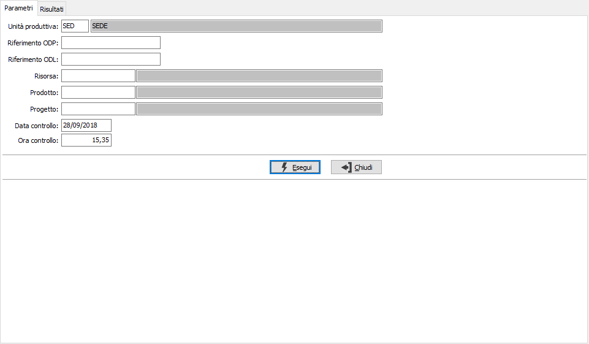
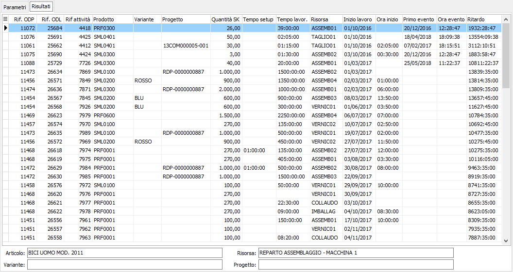

Analisi ritardi attività
La funzione consente di analizzare le attività schedulate lanciate ed in corso la cui data e ora inizio schedulazione è antecedente o uguale alla data/ora richiesta; di queste controlla la presenza del primo evento e la mostra in griglia se in ritardo o non presente nessun evento.
Nella pagina dei parametri sono presenti i criteri di selezione risorsa, prodotto, progetto se attiva la gestione; può essere inserito anche il riferimento diretto all'ODP o all'ODL; la data e l'ora vengono utilizzate per effettuare il controllo sugli eventi.
Premendo il pulsante Esegui si avvia l'elaborazione che porterà alla pagina dei risultati

La pagina dei Risultati riporta le attività che risultano in ritardo, mostrato in una apposita colonna, in base ai criteri inseriti.

Utilizzando i bottoni Anteprima o Stampa presenti nella toolbar è possibile effettuare la stampa dei dati elaborati.